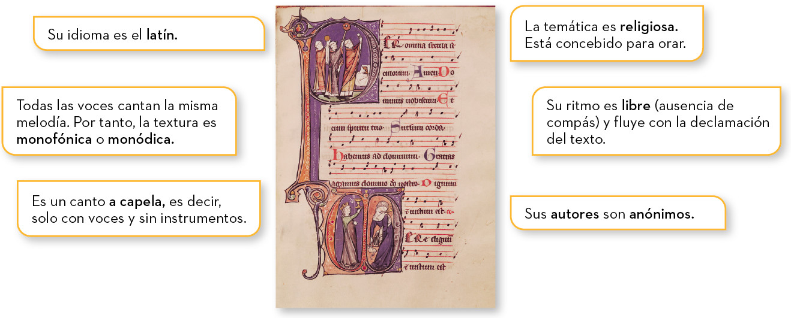

El canto gregoriano
La evolución de la música occidental parte del canto medieval de la iglesia, el canto gregoriano, llamado así en honor al papa Gregorio I (540-604), que fue su primer recopilador.
ESCUCHAMOS PERO NO JUZGAMOS: CANTO GREGORIANO
🎧 Audición 1
Escucha el siguiente fragmento de canto gregoriano y responde:
Canto Gregoriano - Veni Creator Spiritus
- ¿Se escuchan instrumentos o solo voces?
- ¿Cantan a una o varias voces?
- ¿Sabrías identificar en qué idioma cantan?
Tras la audición, pueden deducirse las siguientes características del canto gregoriano:

Textura musical y tipos
A lo largo de las primeras unidades, escucharemos hablar mucho sobre la textura y tipos de texturas. Vamos a descubrir qué significan.
Textura: es la forma en que se combinan y relacionan las distintas melodías, ritmos y voces dentro de una obra sonora.
Tipos de textura:
- Monofonía (o monodia): Consiste en una sola línea melódica sin ningún tipo de acompañamiento ni armonía. Si varias personas cantan o tocan exactamente las mismas notas al mismo tiempo, también es monofonía.
- Homofonía: Varias voces o melodías suenan al mismo tiempo con diferentes notas, pero compartiendo el mismo ritmo (avanzan juntas formando bloques de acordes).
- Polifonía: Varias voces o líneas melódicas suenan al mismo tiempo, pero son independientes entre sí y llevan ritmos diferentes. Las melodías se entrelazan y compiten en protagonismo.
- Melodía acompañada: destaca una melodía sobre un acompañamiento.